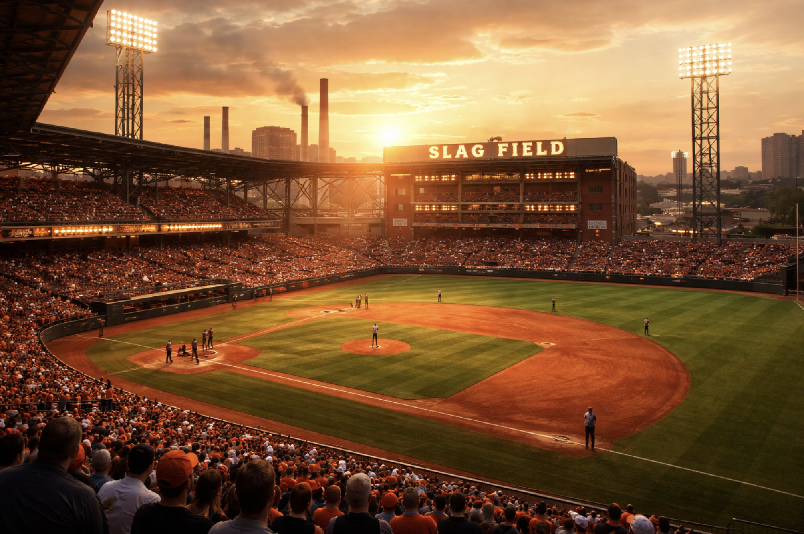
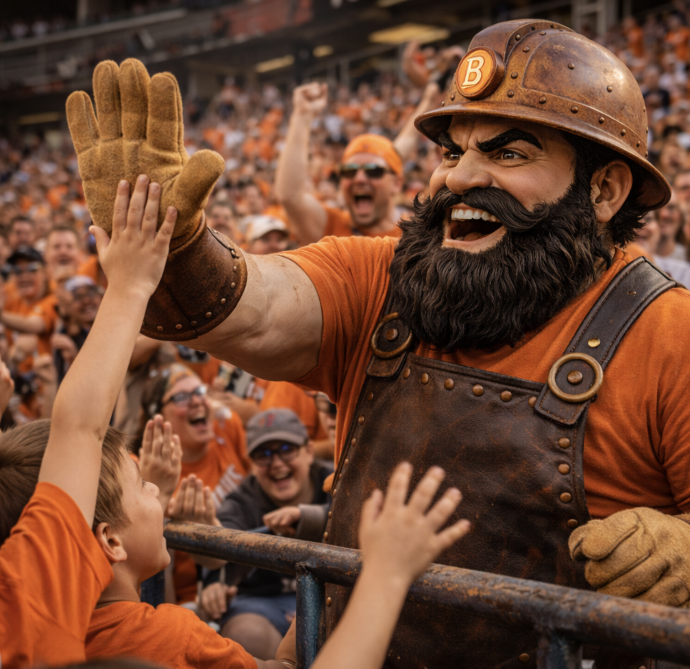
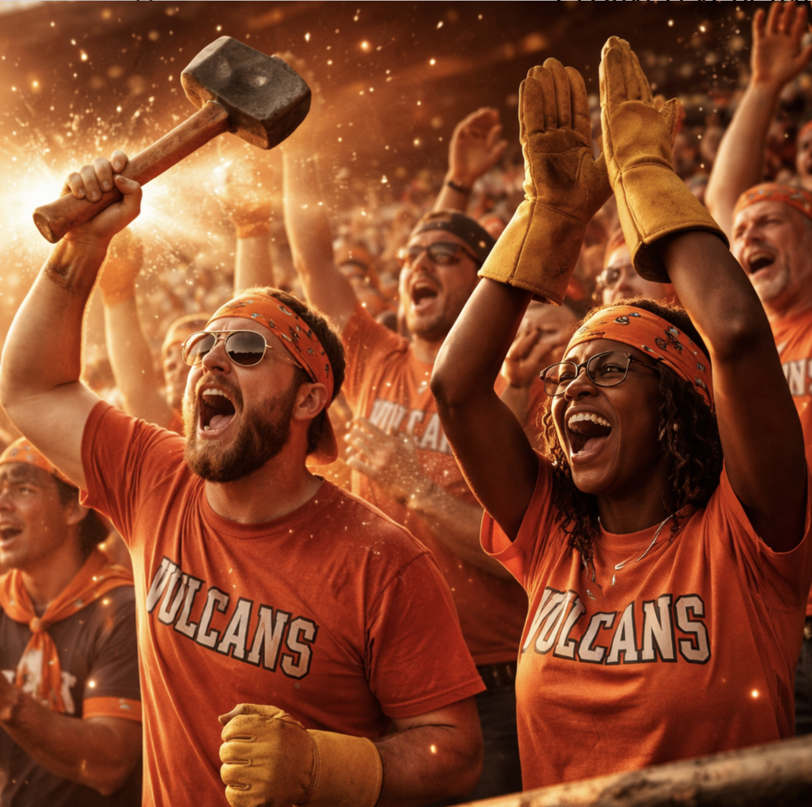

Birmingham Vulcans
Americas DivisionThe Club
The Vulcans play in a working city that treats game night like a standing appointment. The park is loud without trying to be loud—drums, laughter, kids in the aisles, and the steady sense that the locals have been doing this forever. The vibe is heat, hospitality, and civic pride, not dystopia.
- Read: Foundry Town / Saturday Night
- Public Mood: Big Warm Noise
- Ritual: “The Hammer Time”
Ballpark

Slag Yard Park
Warm lights • brick and steel • music between inningsA classic night-game park with real Southern energy—concourse chatter, barbecue smoke, and stadium lights that feel like they’re part of the neighborhood. The place runs hot. Fans don’t complain; they dress for it.
Broadcast & Announcer
Play-by-Play
Booth • crowd in the backgroundA classic booth call—present, human, and quick with local color. You can hear the ballpark in his pauses.

In-Stadium Announcer
PA • hype • “make some noise”The voice that keeps the whole place moving—lineups, promos, birthdays, and the occasional call-and-response that gets half the park shouting back.
Mascot & Stands

Vulcan
Human-worn • slightly scuffed • belovedA real-deal mascot suit with history: seams, wear, and that “he’s been doing this for years” charisma. Always interacting—high-fives, leaning over rails, kids grabbing at the gloves.

The Stands
Families • regulars • loud sectionsThe crowd is the feature. It’s mixed, packed, and expressive—people up between pitches, kids dancing, somebody starting a chant that actually spreads.
Field Notes
- Best time to arrive: when the sun drops and the lights take over.
- Local superstition: don’t sit down during a rally.
- If the mascot points at you, you’re doing something—join in.